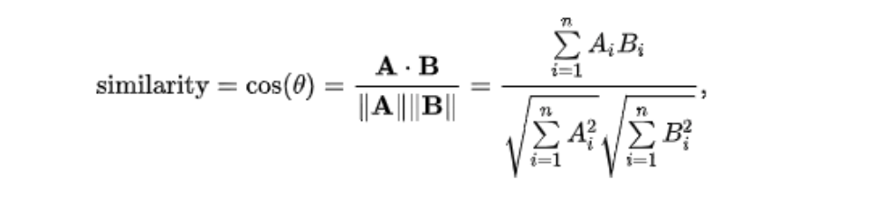
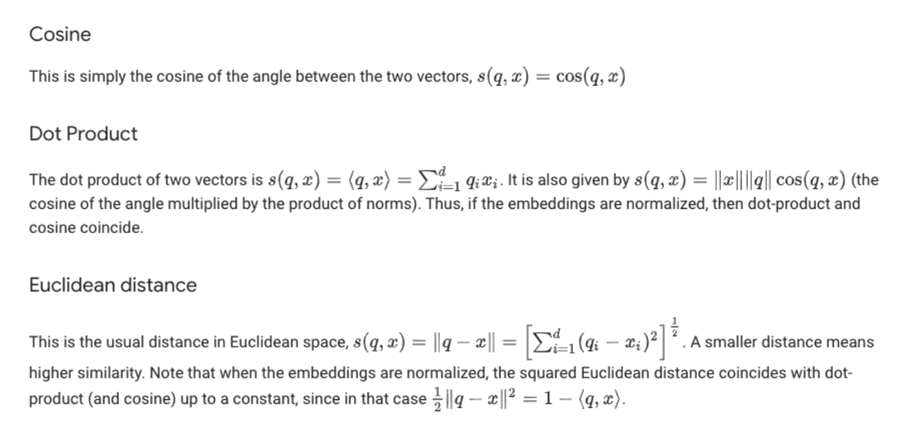

Evaluate RecSys
Similarity Metrics
Dot Product:
Note that popular items tend to be recommended for everyone, especially when using dot product as a similarity measure.
Cosine Similarity
Cosine Similarity is a measurement that quantifies the similarity between two or more vectors. Range:
[0 - 1].

The similarity measurement is a measure of the cosine of the angle between the two non-zero vectors A and B.
As the cosine similarity gets closer to 1, the angle between the two vectors [A,B] is smaller.
Computes similarity as the normalized dot product of X and Y:

Note: In order to compute similarities, the entire dataset needs to be loaded into memory. One solution would be to convert from a dense to a sparse matrix representation given that many of the rows have zero entries. Using implementation sparse.csr_matrix can be used as it’s very memory efficient for storing sparse datasets
Mean Average Precision (MAP)
MAP to evaluate a recommender algorithm implies that we are treating the recommendation like a ranking task.
We want to show the top recommendations first and maybe market them more aggressively.

Coverage
Is the percent of items in the training data the model is able to recommend on a test set.
Personalization
Is a great way to assess if a model recommends many of the same items to different users.
We can use the cosine similarity metric to measure the similarity among the top “K” items recommended.
A high personalization score indicates user’s recommendations are different, meaning the model is offering a personalized experience to each user.